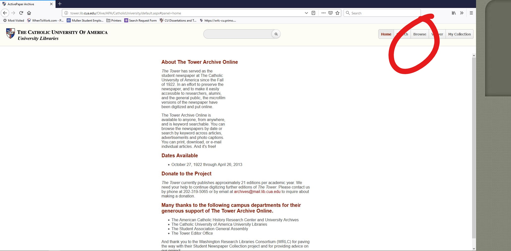

Home Questionnaires Conclusion
I have evaluated the usability of The Tower Archives.
I discuss the following information on this homepage:
You can find my usability test participants' questionnaires and a comparison of results from my usage of the system and my test participants' use of the system by clicking the links at the top of the page.
| # | Input | Output |
|---|---|---|
| 1. | Browse function. Click browse... | And it will yield a list of years that the user can scroll through. Click on a year and the system will display the front page(s) of the available newspaper(s). Click on a page to enter the Viewer. |
| 2. | Double click on an article... | And it will take you to Article View, where you can read an article up close. The user can toggle between Text and Image views of the article -- yielding either a typed transcript of an article of a scanned image of it, respectively. Note that there is no link to the continuation of an article; the user must exit Article View and navigate the newsppaer using the left and right arrows on the screen. Also, when I clicked to Article View from the search results rather than from the Viewer, the webpage would freeze and I would have to start my search all over again. |
| 3. | Search. Enter your query... | And a results list will appear, organized by Relevance. There is a blue and gray bar shown by each record to indicate the relative relevance of each. The user can also click on the date of an article to the refine the search (as if they had selected "search in this year only"). Further refinement facets dealing with including or excluding words/phrases, as well as dates, can be found on the left of the results page. |
| 4. | Click the Envelope button on an article or page... | And a new window will open prompting you to choose what you'd like to send, then ask for an email address to send it to. This allows users to save links to useful material for themselves or share content with other people. Users also have the option to share content via Twitter or Facebook as well as download articles to their computer. These buttons are symbols, but each features a mouseover instruction to guide the user -- something not seen elsewhere on the site. |
1. Flexibility and efficiency of use -- There are many different view modes that users can select, such as Article View and Page View with zoom. This enables users to read articles in ways that are most comfortable for their learning style and reading preference. A user needing to copy some of the text might prefer the Text version, whereas a user looking for a more authentic newspaper experience might prefer to read the Image of the article instead.
In this image: The Article View window as seen when accessed from Page View.
2.Immediate Attraction -- The Browse function is very visible and very inviting. From the first click, it shows images of newspaper front pages and allows for quick navigation of years across the top of the page. The quick scrolling animation as the user toggles through the years is visually pleasing and gives the sense of flying forward or traveling backward in time to search the archive. With the easy-to-access Page View, the user can flip through the pages of a newspaper then return to the Browse page to look at more. It is truly browseable, which cannot be said about many similar sites.

In this image: The Browse button is easily access from the homepage.
1. Provide informative feedback -- For all of its flexibility in view modes, this system does not provide enough information to access these modes. There are no instructions for accessing many functions if they are not triggered by an existing button on the screen. Some require double clicking or clicking on an element that does not have a text or image instruction. Even simple mouseover captions would help guide the user to access these somewhat hidden features.
2.Prevent errors and provide simple error recovery -- In Input/Output #2, I mention that whenever I attempted to access Article View from the search results page rather than from the Viewer, the page would freeze. I would then have to refresh the page and lose all my search data. In the meantime, the system provided no information about the error, how to avoid it, or even how to track my search queries. This lack of memory on behalf of the system makes it frustrating for users who are unable to quickly toggle from the search results to Article View in order to narrow down the results to find what they need.

In this image: After closing the Article View window, my webpage froze on my search results. I could scroll down but I could not click on or activate any of the functions on the page.
555 HW2 ----- Arlia Delphonse ----- delphonse@cua.edu